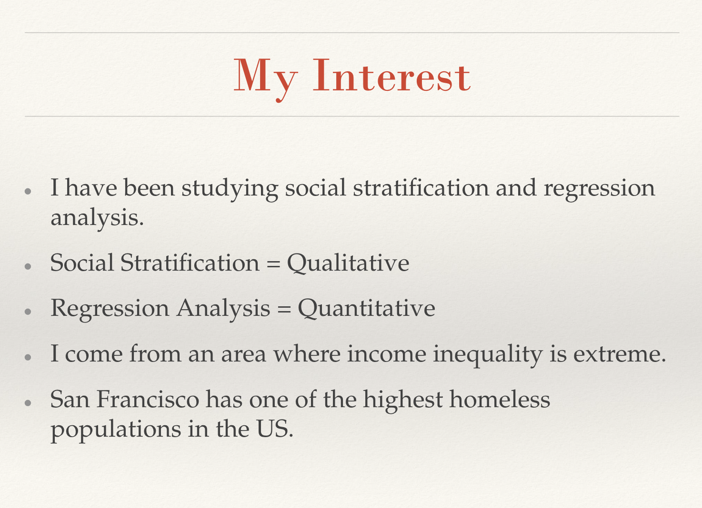
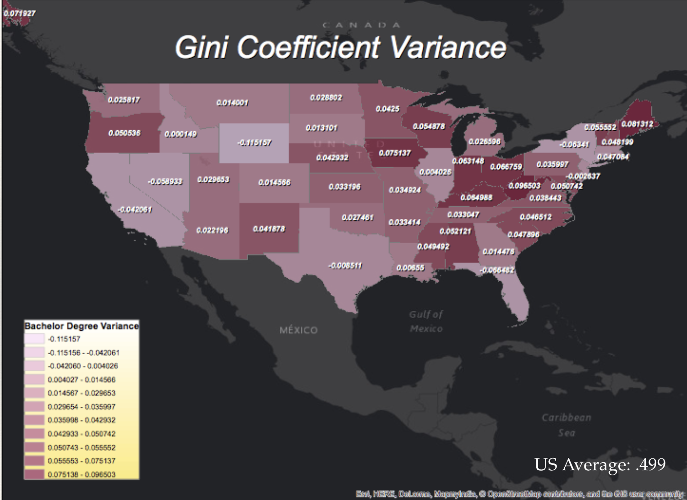
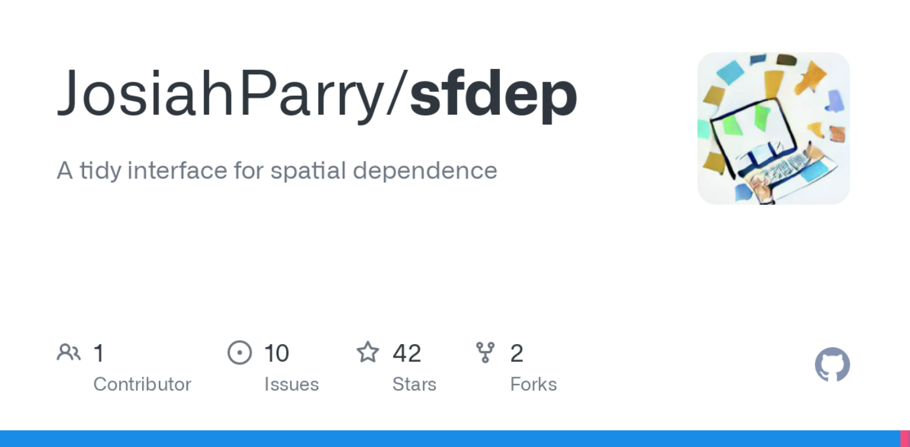
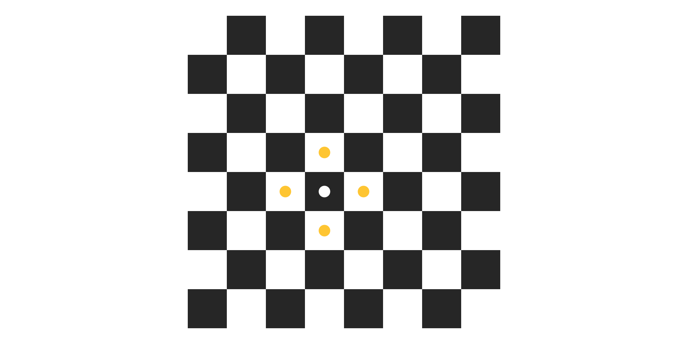
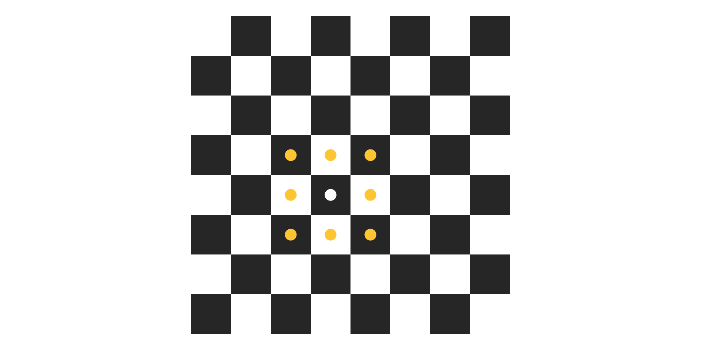
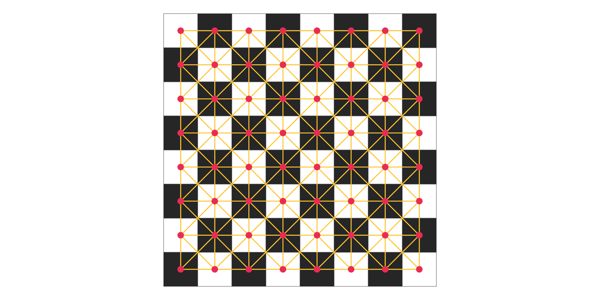
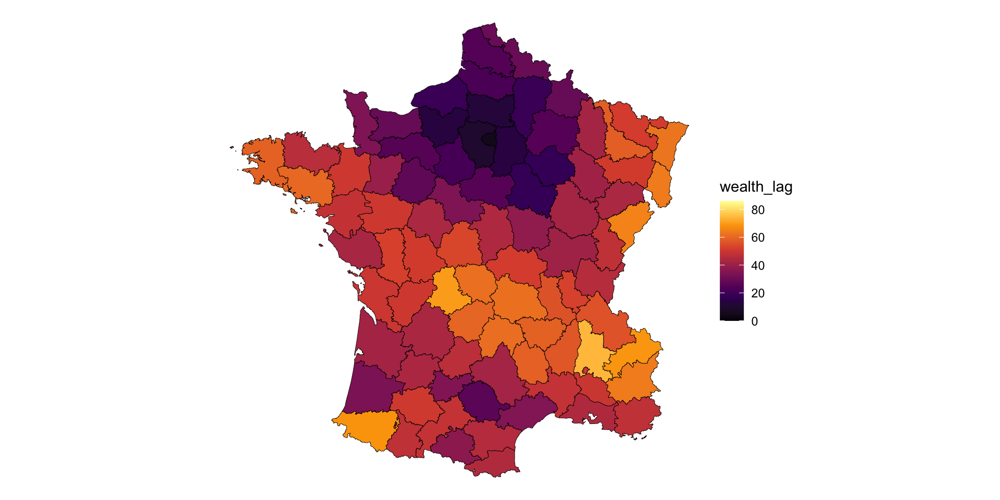
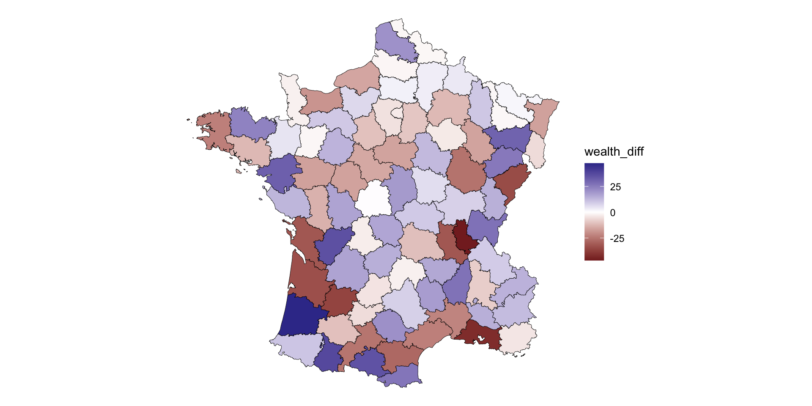
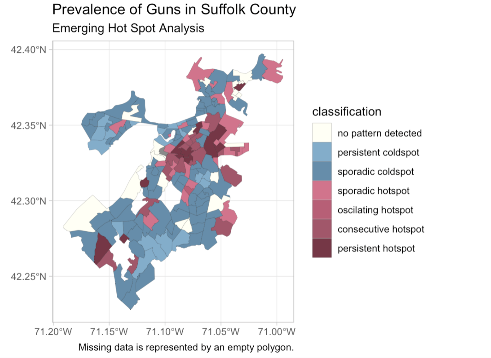
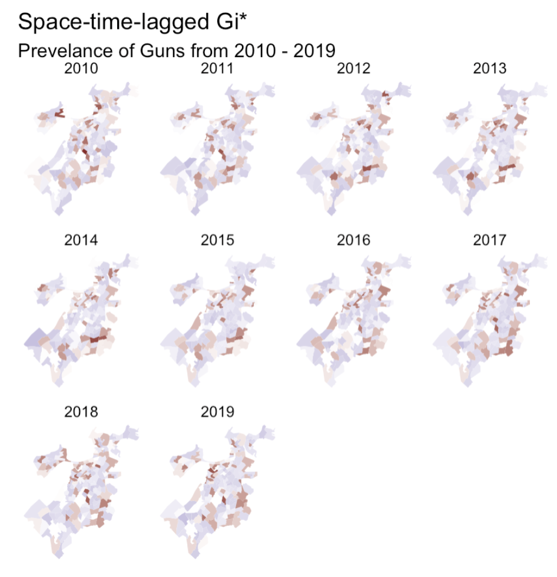

friday evening chat
objectives
- tell you my story
- maybe inspire you to program
- a brief lesson on spatial analysis
- anything you want this is your time
A bit about myself
or, why should you actually listen to me
It’s a me
- MS in Urban Informatics, Northeastern
- Sr. Product Engineer @ Esri
- Spatial Statistics
- Previously @ RStudio (now Posit)
- Programming in R since 2014
humble beginnings

Plymouth State
PSU is nationally recognized
but not in the way that most people want to be
“…this New Hampshire institution of higher learning is back. Four things students dig are skiing, skiing, studying and [partying] on the lake.
Playboy, 2010
finding geography
from anthropology & sociology to GIS
Tobler changed my perspective
“everything is related to everything else, but near things are more related than distant things.”
Waldo Tobler
Humanity is inherently spatial
everything we do happens somewhere

I become a GIS pro

stats interest became an R interest
- wanted to do more advanced stats
- learned 1:1 with my professor
- finding data meant cleaning data
- explored new packages and exposed to new domains
- natural language
- software engineering
- etc
The next few years
- spend all my free time learning R
- I intern at DataCamp making R courses
- Research using interactive GIS
- Decide grad school was the right thing for me
- promptly rejected from all but one school
Northeastern

Advanced Spatial Analysis

Advanced Spatial Analysis
- one of my last courses in grad school
- learned about spatial autocorrelation
- spatial regression
- basics of networks analysis
a pandemic rages
Going beyond maps
neighborhoods, autocorrelation, and tooling
Neighborhood
fundamental concept of analysis ## In urban studies
- the neighborhood fundamental to sociology
- Chicago school (Park & Burgess)
- used to understand differences inside of the city
- too much nuance
In spatial analysis
- are phenomena spatially dependent?
- do similar values occur near each other
- start focal with a location \(i\)
- it’s neighbors are \(j\)
- \(X_i\) is compared to \(X_j\)
- not to \(X\)
how do we define the neighbors?
it depends….
contiguities
how do you choose what the neighbors are for a location?

Rook Contiguity
Rook Contiguity

Queen contiguity
Queen contiguity
Neighbors in practice

Evaluating the neighborhood
how does \(i\) compare to \(j\)
the spatial lag
the neighborhood value
Understanding the lag
- “expected value” of the neighborhood
- it is the average value of the neighborhood (excluding \(i\))
- summarizes values of \(x\) for an observation \(i\)’s neighborhood
Observed values

Neighborhood values at \(i\)
the lag is a neighborhood smoother
Observed vs neighborhood
where locations deviate from their neighbors
Spatial Lag is the basis of:
- spatial clustering (autocorrelation)
- hot spot detection (clustering)
- spatial regression
- (inference / neighborhood spill over effects)
- spatio-temporal hot spot analysis
Example
Example
Tools in the R ecosystem
sf- spatial vector dataspdep- spatial statisticssfdep- a tidy interface to spdeprgeoda- R interface to GeoDa
Tools in Python ecosystem
geopandas-sfequivalentpysala very robust set of spatial statistics tooolsshapelyfor geometries
What do you want to do next?
- i can answer questions
- i can demo code
- i can talk through the spatial lag in more detail
- we can discuss hot spot analysis
- anything you want :)